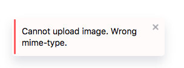

Editor.js API¶
Most actual API described by this interface.
📃 See official API documentation https://editorjs.io/api
Tools have access to the public methods provided by Editor.js API Module. Plugin and Tune Developers can use Editor`s API as they want.
Block API¶
API for certain Block methods and properties. You can access it through editor.api.block.getBlockByIndex method or get it form block property of Tool constructor argument.
name: string — Block's Tool name (key, specified in tools property of initial configuration)
config: ToolConfig — Tool config passed on Editor initialization
holder: HTMLElement — HTML Element that wraps Tool's HTML content
isEmpty: boolean — true if Block has any editable content
selected: boolean - true if Block is selected with Cross-Block Selection
set stretched(state: boolean) — set Block's stretch state
stretched: boolean — true if Block is stretched
call(methodName: string, param?: object): void — method to call any Tool's instance methods with checks and error handlers under-the-hood. For example, Block lifecycle hooks
save(): Promise<void|SavedData> — returns data saved from current Block's state, including Tool name and saving exec time
validate(data: BlockToolData): Promise<boolean> — calls Tool's validate method if exists
dispatchChange(): void - Allows to say Editor that Block was changed. Used to manually trigger Editor's 'onChange' callback. Can be useful for block changes invisible for editor core.
Api object description¶
Common API interface.
export interface API {
blocks: IBlocksAPI;
caret: ICaretAPI;
sanitizer: ISanitizerAPI;
toolbar: IToolbarAPI;
// ...
}
```
#### BlocksAPI
Methods that working with Blocks
`render(data)` - render passed JSON data
`renderFromHTML(data)` - parse and render passed HTML string (*not for production use*)
`swap(fromIndex, toIndex)` - swaps two Blocks by their positions (deprecated:
use 'move' instead)
`move(toIndex, fromIndex)` - moves block from one index to another position.
`fromIndex` will be the current block's index by default.
`delete(blockIndex?: Number)` - deletes Block with passed index
`getCurrentBlockIndex()` - current Block index
`getBlockByIndex(index: Number)` - returns Block API object by passed index
`getBlocksCount()` - returns Blocks count
`stretchBlock(index: number, status: boolean)` - _Deprecated. Use Block API interface instead._ make Block stretched.
`insertNewBlock()` - __Deprecated__ insert new Block after working place
`insert(type?: string, data?: BlockToolData, config?: ToolConfig, index?: number, needToFocus?: boolean)` - insert new Block with passed parameters
`update(id: string, data?: BlockToolData, tunes?: {[name: string]: BlockTuneData})` - updates block data and block tunes for the block with passed id
#### SanitizerAPI
`clean(taintString, config)` - method uses HTMLJanitor to clean taint string.
Editor.js provides basic config without attributes, but you can inherit by passing your own config.
If Tool enables inline-tools, we get it's sanitizing rules and merge with your passed custom rules.
Usage:
```js
let taintString = '<div><p style="font-size: 5em;"><b></b>BlockWithText<a onclick="void(0)"></div>'
let customConfig = {
b: true,
p: {
style: true,
},
}
this.api.sanitizer.clean(taintString, customConfig);
ToolbarAPI¶
Methods that working with Toolbar
open() - opens toolbar
close() - closes toolbar, toolbox and blockSettings if they are opened
InlineToolbarAPI¶
Methods that works with inline toolbar
open() - opens inline toolbar, (opens for the current selection)
close() - closes inline toolbar
ListenerAPI¶
Methods that allows to work with DOM listener. Useful when you forgot to remove listener. Module collects all listeners and destroys automatically
on(element: HTMLElement, eventType: string, handler: Function, useCapture?: boolean) - add event listener to HTML element
off(element: HTMLElement, eventType: string, handler: Function) - remove event handler from HTML element
CaretAPI¶
Methods to manage caret position.
Each method accept position and offset parameters. Offset should be used to shift caret by passed amount of characters.
Position can be one of the following values:
| Value | Description |
|---|---|
start |
Caret will be set at the Block's beginning |
end |
Caret will be set at the Block end |
default |
More or less emulates browser behaviour, in most cases behaves as start |
Each method returns boolean value: true if caret is set successfully or false otherwise (e.g. when there is no Block at index);
setToFirstBlock(position?: 'end'|'start'|'default', offset?: number): boolean; — set caret to the first Block
setToLastBlock(position?: 'end'|'start'|'default', offset?: number): boolean; — set caret to the last Block
setToNextBlock(position?: 'end'|'start'|'default', offset?: number): boolean; — set caret to the next Block
setToPreviousBlock(position?: 'end'|'start'|'default', offset?: number): boolean; — set caret to the previous Block
setToBlock(index: number, position?: 'end'|'start'|'default', offset?: number): boolean; — set caret to the Block by passed index
focus(atEnd?: boolean): boolean; — set caret to the Editor. If atEnd is true, set it at the end.
NotifierAPI¶
If you need to show any messages for success or failure events you can use notifications module.
Call on target Editor:
let editor = new EditorJS({
onReady: () => {
editor.notifier.show({
message: 'Editor is ready!'
});
},
});
In Tool's class:
this.api.notifier.show({
message: 'Cannot upload image. Wrong mime-type.',
style: 'error',
});

Check out codex-notifier package page on GitHub to find docs, params and examples.
Destroy API¶
If there are necessity to remove Editor.js instance from the page you can use destroy() method.
It makes following steps:
-
Clear the holder element by setting it`s innerHTML to empty string
-
Remove all event listeners related to Editor.js
-
Delete all properties from instance object and set it`s prototype to
null
After executing the destroy method, editor inctance becomes an empty object. This way you will free occupied JS Heap on your page.
Tooltip API¶
Methods for showing Tooltip helper near your elements. Parameters are the same as in CodeX Tooltips lib.
Show¶
Method shows tooltip with custom content on passed element
this.api.tooltip.show(element, content, options);
| parameter | type | description |
|---|---|---|
element |
HTMLElement | Tooltip will be showed near this element |
content |
String or Node | Content that will be appended to the Tooltip |
options |
Object | Some displaying options, see below |
Available showing options
| name | type | action |
|---|---|---|
| placement | top, bottom, left, right |
Where to place the tooltip. Default value is `bottom' |
| marginTop | Number | Offset above the tooltip with top placement |
| marginBottom | Number | Offset below the tooltip with bottom placement |
| marginLeft | Number | Offset at left from the tooltip with left placement |
| marginRight | Number | Offset at right from the tooltip with right placement |
| delay | Number | Delay before showing, in ms. Default is 70 |
| hidingDelay | Number | Delay before hiding, in ms. Default is 0 |
Hide¶
Method hides the Tooltip.
this.api.tooltip.hide();
onHover¶
Decorator for showing tooltip near some element by "mouseenter" and hide by "mouseleave".
this.api.tooltip.onHover(element, content, options);
API Shorthands¶
Editor`s API provides some shorthands for API methods.
| Alias | Method |
|---|---|
clear |
blocks.clear |
render |
blocks.render |
focus |
caret.focus |
save |
saver.save |
Example
const editor = EditorJS();
editor.focus();
editor.save();